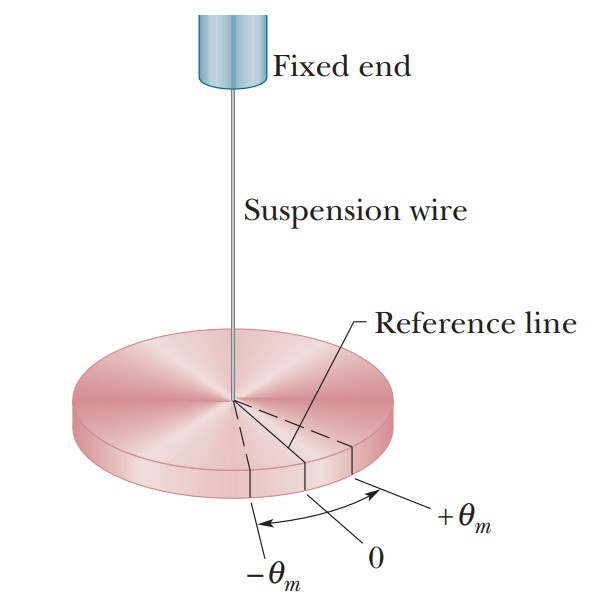

← Prev: Lecture 3
Course Directory
Next: Lecture 5 →
ถัดไป: บทที่ 5 →
Lecture 4: Torsion Pendulums, Elasticity, and Advanced Mechanical Oscillators
บทที่ 4: เพนดูลัมการบิด สภาพยืดหยุ่น และระบบการสั่นทางกลระดับสูง
Interactive Physics Visualizer: Liquid Column in U-Tube Oscillator
Displacement $y_0$:
40
mm
Column Length $l$:
1.0
m
Tensile Stress & Strain Elongation (Hooke's Law: σ = F/A = Y·(ΔL/L₀))
Original Un-stretched Rod (Length L₀, Cross-section A)
Force F
Force F
Original Length L₀
Elongation ΔL
Topic 4.1: Elasticity, Stress, and Strain
หัวข้อ 4.1: สภาพยืดหยุ่น ความเค้น และความเครียด
Tensile Stress:
$$\text{Stress} = \frac{F}{A}$$
Tensile Strain:
$$\text{Strain} = \frac{\Delta l}{l_0}$$
Equivalent Spring Force (Hooke's Law):
$$\frac{F}{A} = Y \frac{\Delta l}{l_0} \implies F = -\left(\frac{Y A}{l_0}\right) x = -k x$$
Elastic Wire Elongation & Length Change (Hooke's Law: ΔL = F·L₀ / AY ⟹ Equivalent Spring Constant k = AY / L₀)
d
L₀
(1) Unloaded Wire
Length = L₀
m
ΔL_eq
L = L₀ + ΔL_eq
(2) Static Equilibrium
Stretched by ΔL_eq
m
+x
F = −kx
(3) Stretched State (+x)
Total L = L₀ + ΔL_eq + x
Topic 4.2: Oscillation of Elastic Wire/Rod
หัวข้อ 4.2: การสั่นของเส้นลวด/แท่งวัตถุยืดหยุ่น
Equivalent Spring Constant:
$$k = \frac{\pi Y d^2}{4 l_0}$$
Angular Frequency:
$$\omega = \sqrt{\frac{k}{m}} = \sqrt{\frac{\pi Y d^2}{4 m l_0}}$$

Image Credit:
Thai Physics Society (Article 332)
Topic 4.3: Torsion Pendulum
หัวข้อ 4.3: เพนดูลัมการบิด (Torsion Pendulum)
Restoring Torque:
$$\tau = -\kappa \theta$$
Torsion Constant ($\kappa$) of Solid Rod/Wire:
$$\kappa = \frac{\pi n R^4}{2l} = \frac{\pi n d^4}{32 l}$$
Equation of Motion:
$$I \ddot{\theta} + \kappa \theta = 0 \implies \ddot{\theta} + \frac{\kappa}{I} \theta = 0$$
Angular Frequency:
$$\omega_0 = \sqrt{\frac{\kappa}{I}} = \sqrt{\frac{\pi n R^4}{2 I l}} = \sqrt{\frac{\pi n d^4}{32 I l}}$$
P, V
y
Topic 4.4: Spring of Air (Adiabatic Ball Oscillation)
หัวข้อ 4.4: สปริงอากาศ (การสั่นของทรงกลมแบบอดิอาแบติก)
Adiabatic Expansion Relation:
$$P V^\gamma = \text{constant} \implies dP = -\gamma \frac{P}{V} dV$$
Restoring Force:
$$F = \Delta P \cdot A = -\gamma \frac{P A^2}{V} y \quad (\text{since } dV = A y)$$
Equation of Motion:
$$m \ddot{y} + \frac{\gamma P A^2}{V} y = 0$$
Angular Frequency:
$$\omega_0 = \sqrt{\frac{\gamma P A^2}{m V}} = \sqrt{\frac{3 \pi \gamma a P}{4 \rho V}} \quad \left(\text{using } m = \rho \frac{4}{3}\pi a^3\right)$$
y
y
Topic 4.5: Liquid Column in a U-Tube
หัวข้อ 4.5: การแกว่งของลำของเหลวในหลอดแก้วรูปตัวยู
Potential Energy:
$$U = \rho g A y^2$$
Kinetic Energy:
$$T = \frac{1}{2} \rho A l \dot{y}^2$$
Total Mechanical Energy:
$$E = T + U = \frac{1}{2} \rho A l \dot{y}^2 + \rho g A y^2 = \text{constant}$$
Equation of Motion:
$$\ddot{y} + \frac{2g}{l} y = 0$$
Angular Frequency:
$$\omega_0 = \sqrt{\frac{2g}{l}}$$
m
k
Topic 4.6: Cylinder Rolling on Springs
หัวข้อ 4.6: ทรงกระบอกกลิ้งบนสปริง
Effective Spring Constant:
$$k_{\text{eff}} = 2k$$
Total Energy:
$$E = T + U = \frac{3}{4} m \dot{x}^2 + k x^2 = \text{constant}$$
Equation of Motion:
$$\ddot{x} + \frac{4k}{3m} x = 0$$
Angular Frequency:
$$\omega_0 = \sqrt{\frac{4k}{3m}}$$
θ
k
Topic 4.7: Pivoted Rod Supported by Spring
หัวข้อ 4.7: แท่งวัตถุหมุนรอบจุดหมุนพร้อมสปริงรองรับ
Static Equilibrium Constraint:
$$k x_0 = \frac{mg}{2}$$
Equation of Motion ($I = \frac{1}{3} m L^2$):
$$I \ddot{\theta} + k L^2 \theta = 0 \implies \ddot{\theta} + \frac{3k}{m} \theta = 0$$
Angular Frequency:
$$\omega_0 = \sqrt{\frac{3k}{m}}$$